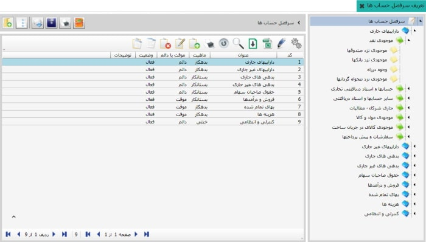
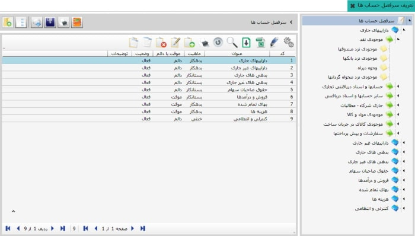
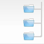
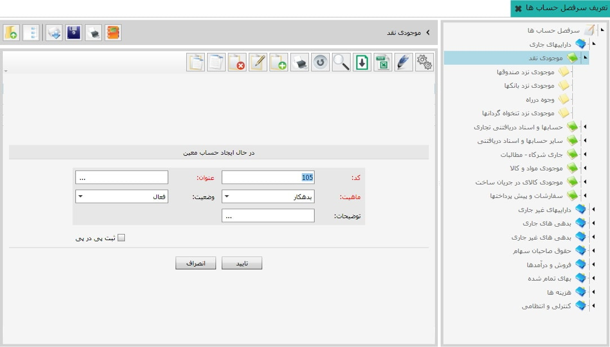
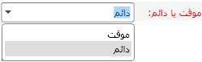
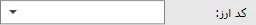

مطابق شکل زیر با کلیک روی « بله » این کدینگ در سیستم قرار می گیرد 
از منوی سمت راست نرم افزار روی گزینه تعریف سر فصل حساب ها کلیک کنید تا صفحه مربوط به آن باز شود. برای شروع کار با اتوماسیون حسابداری نیاز دارید که سر فصل حساب های مورد نیازتان (که از آن تعبیر به کدینگ حساب ها می شود) را تعریف کنید. نرم افزار سایان به شما این اجازه را می دهد که سرفصل حساب دلخواه خودتان را ایجاد نمایید اما به دلیل اینکه این کار وقت زیادی را از شما می گیرد لذا در نرم افزار سایان سر فصل های پیش فرض جامع و کاملی ارائه شده است که می توانید آنها را بازیابی کنید. با این حال در صورت نیاز می توانید در سرفصل بازیابی شده، گروه های حساب و حساب های کل و معین مورد نظر خود را اضافه کنید. ابتدا روش بازیابی سر فصل های پیش فرض نرم افزار را توضیح می دهیم و در ادامه به نحوه تعریف کردن گروه های حساب و حساب های کل و معین خواهیم پرداخت. برای بارگذاری سر فصل پیش فرض، در صفحه تعریف سرفصل حساب ها، از نوار ابزار در شکل زیر آیکن خواندن سر فصل از فایل (Ctrl+ O) را که در کادر شماره یک قرار دارد انتخاب کنید تا پنجره مربوطه نمایش داده شود.
همان طور که در شکل بالا مشاهده می کنید
در این پنجره فایل حاوی سرفصل حساب
پیش فرض با عنوان «کدینگ عمومی» در کادر شماره دو وجود دارد.
کدینگ عمومی را انتخاب کنید سپس روی دکمه
Open
کلیک کنید، پیغام زیر ظاهر می شود
مطابق شکل زیر با کلیک روی
« بله »
این کدینگ در سیستم قرار می گیرد

در شکل بالا سر فصل بازیابی شده را مشاهده می کنید، صفحه شامل دو قسمت است که در سمت راست نمودار درختی سر فصل حساب ها وجود دارد، این سر فصل دارای گروه های حساب می باشد که با رنگ آبی مشخص هستند و داخل هر یک از این گروه های حساب، حساب های کل متناسب با آنها وجود دارد که به رنگ سبز هستند و هر یک از این حساب های کل دارای حساب های معین متناسب با خود هستند که به رنگ زرد می باشند. با انتخاب هر مجموعه از نمودار درختی در سمت راست، حساب های داخل آن در جدول سمت چپ شکل بالا نمایان می شود. در این جدول « ماهیت» حساب ها و « موقت یا دائم» بودن آن ها تعیین شده است.
کاربرد سایر کلید ها در صفحه تعریف سرفصل حساب ها به شرح زیر است
 با استفاده از این گزینه می توانید سرفصل های
حساب تعریف شده را در فایلی با فرمت xml در کامپیوتر خودتان ذخیره کنید.
با استفاده از این گزینه می توانید سرفصل های
حساب تعریف شده را در فایلی با فرمت xml در کامپیوتر خودتان ذخیره کنید.
 چاپ سرفصل: به شما این امکان را می دهد که لیست
سرفصل های حساب را به شکل درختی چاپ کنید.
چاپ سرفصل: به شما این امکان را می دهد که لیست
سرفصل های حساب را به شکل درختی چاپ کنید.
 مشاهده لایه ها: با قرار گرفتن روی
هر حساب در جدول صفحه تعریف سرفصل حساب ها
و انتخاب « مشاهده لایه ها»، معین های
آن حساب را به همراه لایه های مرتبط با
آن در پنجره ای جداگانه نمایش می دهد.
مشاهده لایه ها: با قرار گرفتن روی
هر حساب در جدول صفحه تعریف سرفصل حساب ها
و انتخاب « مشاهده لایه ها»، معین های
آن حساب را به همراه لایه های مرتبط با
آن در پنجره ای جداگانه نمایش می دهد.
 نمایش درخت: از این گزینه برای نمایش درخت سرفصل حساب ها در سمت راست صفحه و یا عدم نمایش درخت استفاده می شود.
 برگشت به قبلی: در هر جای نرم افزار، در هر
صفحه ای که قرار داشته باشید با استفاده از این
گزینه می توانید به صفحه قبل از آن بازگردید
برگشت به قبلی: در هر جای نرم افزار، در هر
صفحه ای که قرار داشته باشید با استفاده از این
گزینه می توانید به صفحه قبل از آن بازگردید
در صورتی که نیاز باشد گروه حساب، حساب کل یا حساب معین جدیدی ایجاد کنید این کار را می توانید به راحتی انجام دهید. برای ایجاد گروه حساب، در شکل صفحه قبل از نمودار درختی سر فصل حساب ها را انتخاب کنید تا گروه های حساب داخل آن در جدول سمت چپ نمایان شوند سپس از این جدول روی گزینه اضافه کلیک کنید تا فرم مربوط به ایجاد گروه حساب باز شود :
 در این قسمت عنوان گروه حساب مورد نظر را وارد کنید.
ماهیت گروه حساب مورد نظر را می توانید از بین سه ماهیت بدهکار، بستانکار و خنثی انتخاب کنید.

همان طور که می دانید در حسابداری دو نوع حساب وجود دارد، حساب های دائم که از یک دوره مالی به دوره مالی دیگر منتقل می شوند (مثل حساب دارایی ها) و حساب های موقت که با پایان دوره مالی بسته می شوند و در دوره مالی بعد مانده آن ها از صفر شروع می شود (مثل فروش و درآمد). شما می توانید نوع گروه حساب مورد نظر خود را از این قسمت انتخاب کنید. در صورت نیاز در قسمت توضیحات برای گروه حساب مورد نظر خود توضیحی ارائه بدهید و در آخر روی کلید تایید کلیک کنید تا گروه حساب مورد نظر شما ایجاد شود.
برای ایجاد حساب کل در یکی از گروه های حساب ابتدا از نمودار درختی گروه حسابی را که می خواهید در آن حساب کل جدید ایجاد کنید انتخاب نمایید تا لیست حساب های کل آن در جدول سمت چپ نشان داده شود سپس از این قسمت روی گزینه اضافه کلیک کنید تا فرم مربوط به ایجاد حساب کل باز شود و آن را طبق فرم ایجاد گروه حساب تکمیل کرده و تایید کنید.

برای ایجاد حساب معین در داخل حساب کل مورد نظر نیز از نمودار درختی ابتدا گروه حساب سپس حساب کل مورد نظر را انتخاب کنید تا در لیست سمت چپ حساب های معین موجود در حساب کل نمایان شوند. حال باز کلید اضافه را انتخاب کرده تا وارد فرم ایجاد حساب معین شوید و آن را مانند دو فرم قبلی تکمیل کرده و تایید کنید.